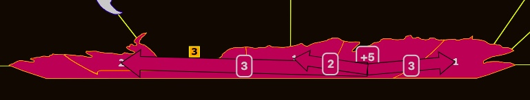
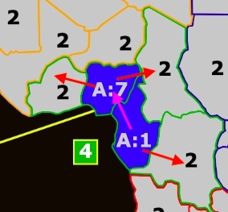
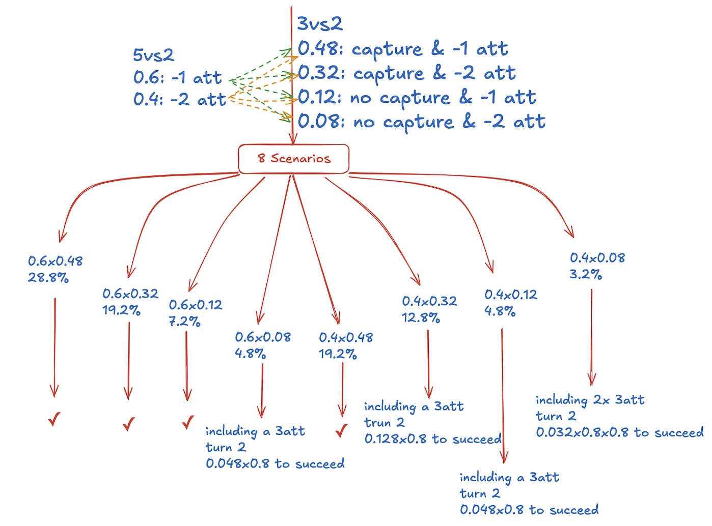

WR
Theory
WR, short for weighted random, is one of the two settings used for rounding in kill-rates. While in the section for kill-rates I referred to SR 0% luck as deterministic settings, WR works in a different way, where when you perform an attack of 3 armies against a 2 army neutral, the outcome is based on probabilities.
For each attack the game computes E = armies × kill-rate then turns that fractional expectation E into a whole number of kills with a single, biased coin-flip. In a 4vs3 scenario, 4 × 0.6 = 2.4 results in a 60% chance to kill 2 defenders and a 40% chance to kill 3 defenders. WR never gives "wild rolls" that are 2–3 more values away from the expectation; its outcome comes at ±0.8 variance at most.
WR templates are played in a completely different style than SR ones, and although the principles you know and apply in SR are universal, the game here revolves more around knowing when to take a risk and when not to. You'll find that a lot of WR templates resort to including RMO, as a way that balances out the luck aspect of the game, as in "you can get lucky with WR, but your opponent can get lucky with RMO".
Templates
There are currently ten different WR templates in the MTL, with six out of those having all around the same settings but different map dynamics and cards. These templates are given in the table below.
| Template (Name) | Move order | Init terr | Arm / Init terr | Neutr Size | Neutr in Dist | Wasts (#) | Waste Size | Income (base) |
|---|---|---|---|---|---|---|---|---|
| Belarus | cycle | 3 | 6 | 3 | 2 | 35 | 2 | 5 |
| Great Lakes | cycle | 4 | 5 | 3 | 2 | 15 | 4 | 6 |
| British Raj | random | 4 | 4 | 2 | 2 | 7 | 12 | 5 |
| Randomized Strat ME | random | 3 | 4 | 2 | 4 | 7 | 10 | 5 |
| Strat ME | random | 3 | 4 | 2 | 4 | 7 | 10 | 5 |
| Phobia | random | 3 | 4 | 2 | 4 | 6 | 10 | 5 |
| Final Fantasy VII | random | 3 | 4 | 2 | 4 | 6 | 10 | 5 |
| Tor-ture | random | 4 | 4 | 2 | 4 | 6 | 10 | 5 |
| Strategic Commanders | cycle | 3 | 4 | 3 | 5 | 7 | 10 | 4 |
| Pangea Ultima | cycle | 3 | 2 | 2 | 4 | 8 | 10 | 6 |
Probabilities & Expanding Efficiently
While in SR there are strict income transition principles, WR is more about probabilities. As it is rather time-consuming to calculate probabilities, I will give you in this section some of the different scenarios as well as the way to optimize your moves as fast as possible.
Consider the scenario of a single pick in a central territory of a +3 bonus in a template like Strat ME as in Antarctica in this game. This unintuitive idea is theoretically possible, just not probable, in Strat ME. Since you have to queue three attacks of 3/3/2 on Turn 1 in order to finish the bonus, all three must succeed:
- 3vs2, 3 attackers capture 2 neutrals:
3 × 0.6 = 1.8 → 80%of the time. - 2vs2, 2 attackers capture 2 neutrals:
2 × 0.6 = 1.2 → 20%of the time.
For all three to succeed, P = P3 × P3 × P2 = 0.8 × 0.8 × 0.2 = 0.128 or 12.8%.

We can extend this idea to completing a +4 bonus in Strat ME either in one or in two turns with a single pick. The possible sequences you can follow are:
- 4x +2 attacks on Turn 1
- Single +8 attack on Turn 1 into 3 attacks on Turn 2
- Split Turn 1 into attacks of 3 & 5
- Split Turn 1 into attacks of 4 & 4
4x +2 attacks on Turn 1
If you do this I suggest uninstalling the game and converting to roulette. But if you do decide to do it, the probability to finish the bonus comes at 0.24 or 0.16%.
Single +8 attack on Turn 1 into 3 attacks on Turn 2
To track the overall chance to finish the bonus following this sequence:
- On Turn 1 we lose 1 attacker -> 6 movable left (60%). On Turn 2 we do 4/4/3 attacks, that's an 80% chance all three succeed (capture). Overall
0.6 × 0.8 = 0.48-> 48% chance to complete bonus. - On Turn 1 we lose 2 attackers -> 5 movable left (40%). On Turn 2 we need 4/3/3 attacks to finish bonus, that's
0.8 × 0.8 = 0.64chance those two attacks succeed (capture). Overall0.4 × 0.8 × 0.8 = 0.256-> 25.6% chance to complete bonus. - Adding the 2 different scenarios together, there's an overall 73.6% chance of finishing the bonus on Turn 2.

Split Turn 1 into attacks of 3 & 5
This is a rather more complicated calculation:
- On Turn 1, two attacks are queued, a 5vs2 and a 3vs2 attack.
- 5vs2 always works, 60% for -1 attacker, 40% for -2 attackers.
- 3vs2 doesn't work always. In fact the probabilities are given by the equations:
whereP(C ∧ L1) = 0.48P(C ∧ L2) = 0.32P(¬C ∧ L1) = 0.12P(¬C ∧ L2) = 0.08Cdenotes capturing the neutral,¬Cdenotes not capturing the neutral, andLkthe number of attackers lost. For example, for not capturing the neutral (20%) and losing 2 attackers (40%), overall probability comes at0.2 × 0.4.
- After Turn 1, there are 8 scenarios and different approaches on Turn 2.
- It can be calculated that the overall success probability comes at 94.368% and chance to fail at 5.632%.

If it helps at understanding when completing the +4 bonus can fail, denoting as b1–b8 from left to right the scenarios above:
- b1: -1 attacker from 5vs2 and 0.48 scenario from 3vs2 (capture and -1 attacker). b1 comes at
0.6 × 0.48 = 0.288 → 28.8%of the times. Can always finish bonus with 2x 4vs2 attacks. - b2:
0.6 × 0.32 = 0.192, always have enough to finish bonus on Turn 2. - b3:
0.6 × 0.12 = 0.072, always have enough to finish bonus on Turn 2. - b4:
0.6 × 0.08 = 0.048. Attack of 3vs2 has failed and we lost 2 attackers, so we need +1 deployed to get the now 1-army neutral with a 2-attack. Besides that we have +1 deployed for a 4-army attack and +3 deployed for a 3-army attack. Risk involved. In this subscenario 80% of the time we complete bonus, 20% we don't (due to the 3-attack). Chance to fail at0.048 × 0.2 = 0.0096. - b5:
0.4 × 0.48 = 0.192, Turn 2 we deploy 2+3, always enough to finish bonus. - b6:
0.4 × 0.32 = 0.128, need a 3-attack on turn 2, so0.128 × 0.2 = 0.0256chance to fail. - b7:
0.4 × 0.12 = 0.048, need a 3-attack on turn 2, so0.048 × 0.2 = 0.0096chance to fail. - b8:
0.4 × 0.08 = 0.032, need two 3-attacks on turn 2, so0.032 × (1 - (0.8 × 0.8)) = 0.01152chance to fail.
Overall chance to fail by adding b4, b6, b7, b8 is 5.632%.
Split Turn 1 into attacks of 4 & 4
Following the same logic:
- Two attacks of 4vs2 occur on Turn 1. Each attack always captures but comes at a 60% chance of having -1 attacker and a 40% chance of having -2 attackers.
- As a result there are three scenarios:
- c1:
0.6 × 0.6 = 0.36or 36% of the times we lose -1 attacker on each attack. In this scenario, we always have enough armies to finish bonus on Turn 2 (2+2 deployed and 1 elsewhere). - c2:
0.6 × 0.4 × 2 = 0.48or 48% of the times we lose -1 attacker on one and -2 attackers on the other attack. In this scenario, we always have enough armies to finish bonus on Turn 2 (2+3 deployed). - c3:
0.4 × 0.4 = 0.16or 16% of the times we lose -2 attackers on each attack. In this scenario, we have to gamble at least one 3-attack to finish the bonus. Chance to fail comes at0.16 × 0.2 = 0.032 → 3.2%.
- c1:
To sum up all the above calculations, you can take four approaches of completing a +4 bonus in Strat ME or its clones (Scenario 1 is as an FTB, Scenarios 2–4 for completing it by the end of Turn 2), with the results shown in the table below.
| Attack plan (Turn-sequence) | Success prob. (%) | Failure prob. (%) |
|---|---|---|
| 4 × +2 attacks on T1 | 0.16% | 99.84% |
| +8 attack on T1 → 3 attacks on T2 | 73.6% | 26.4% |
| Split T1 into 3 & 5 attacks | 94.368% | 5.632% |
| Split T1 into 4 & 4 attacks | 96.8% | 3.2% |
Use the methodology above in whichever scenario comes up to calculate the optimal way of expanding in whichever template/distribution you are playing. All that really matters is understanding why "more attacks" is a beneficial thing (as shown below).


This has a further application when considering the usefulness of leftover armies. Taking into consideration Frog's Tips, you'll see in games like this, Turn 1 SEA and here, Turn 1 East China, the players go for 3-army attacks on Turn 1 attempting to finish their bonuses. If the reason doesn't come intuitively, since the goal is to complete the bonus by the end of T2, a 3-attack over the course of two turns captures the bonus 92% of the time. It boils down to:
a1) P(C ∧ L1) = 0.8 × 0.6 = 0.48a2) P(C ∧ L2) = 0.8 × 0.4 = 0.32a3) P(¬C ∧ L1) = 0.2 × 0.6 = 0.12a4) P(¬C ∧ L2) = 0.2 × 0.4 = 0.08
- In Scenarios a1 and a2, we successfully capture (80% chance) and have either -1 or -2 attackers.
- In Scenario a3, the 3vs2 doesn't go our way but we only lost 1 attacker and do not need to deploy another army so as to capture the territory on Turn 2, as for example in this game in SEA Turn 1.
- a3 is the only scenario where we don't capture on Turn 1 and need to deploy +1 on Turn 2.